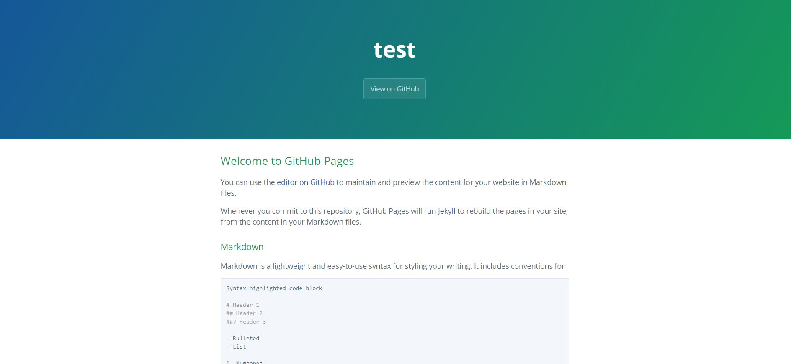

hugo+github建立个人博客
文章目录
详细讲述如何使用hugo+github建立、生成、发布、维护个人静态博客。
01 git安装和使用
参考git官方文档 https://git-scm.com/
Git是一个免费的开源、分布式版本控制系统，旨在快速，高效地处理从小型到大型项目的所有事务。
安装到 git download下载对应的操作系统版本的git安装文件，按照默认提示进行安装，安装完毕配置git的系统环境变量。
git快速使用教程 配置Git
1 2 |
git config --global user.name "yourname"
git config --global user.email "youremail@email.com" |
命令行创建一个新的存储库
1 2 3 4 5 6 |
echo "temp" >> README.md
git init .
git add README.md
git commit -m "first commit"
git remote add origin git@github.com:yourname/temp.git
git push -u origin master |
02 hugo安装和使用
参考hugo中文文档 http://www.gohugo.org/
Hugo是由Go语言实现的静态网站生成器，其特点是简单、易用、高效、易扩展、快速部署，被称为世界上最快的网站构建框架。
安装到 Hugo Releases 下载对应的操作系统版本的Hugo二进制文件（hugo或者hugo.exe）。
hugo快速使用教程
1 2 3 4 5 6 7 8 9 |
# 生成站点
hugo new site blog
cd blog
# 创建文章并编辑
hugo new about.md
# 运行调试Hugo
hugo server --theme=hyde --buildDrafts
# 部署
hugo --theme=hyde --baseUrl="http://coderzh.github.io/" |
备注（以上命令并不会生成草稿页面，如果未生成任何文章，请去掉文章头部的 draft=true 再重新生成；主题和连接可以直接在config.toml进行配置。） 执行完毕，静态页面都会生成到public目录，将pubilc目录里所有文件上传至github.
03 even下载和使用
参考hugo-theme-even中文说明 https://github.com/olOwOlo/hugo-theme-even/blob/master/README-zh.md
Hugo的超简洁主题，该主题移植自HEXO主题，even
even快速使用教程 安装
1 2 |
cd blog
git clone https://github.com/olOwOlo/hugo-theme-even themes/even |
配置 删除even下.git文件夹，复制themes\even\exampleSitex下的文件至blog目录下。根据需求进一步配置config.toml文件。
04 github注册和使用
登录github官网，首次登录输入用户名、邮箱和密码注册，注册成功后，新建仓库，根据提示进行操作。
1 2 3 4 5 6 7 8 9 10 11 |
# ...或在命令行上创建一个新的存储库
echo "temp" >> README.md
git init .
git add README.md
git commit -m "first commit"
git remote add origin git@github.com:yourname/temp.git
git push -u origin master
# ...或从命令行推送现有存储库
git remote add origin git@github.com:yourname/temp.git
git push -u origin master
# ...或从另一个存储库导入代码 |
配置github秘钥ssh
1 2 |
ssh-keygen -t rsa -C "youremail@email.com"
ssh -T git@github.com |
设置github pages 进入建立的存储库，进入设置界面，找到github pages,选择资源和主题，保存即可。 您的网站已准备好发布在 https://gsir-ying.github.io/test/。 初始化网页见下图  上传hugo部署成功的网站
1 2 3 4 5 6 7 |
cd public
git init
git add .
git status
git commit -m "first commit"
git remote add origin git@github.com:yourname/temp.git
git push -f origin master |
上传成功即可打开自己定制的博客网站。
其他
本文提供了制作个人博客的总体流程，包含其中的大部分核心步骤，供大家学习交流。博客的进一步配置和升级会后续发布。
文章作者 GSir
上次更新 2018-11-04